자연적 지식은, 그 무엇과도 바꿀 수 없는 가치입니다.
누구나 할 수 있는DIY 목공예 원데이 클래스
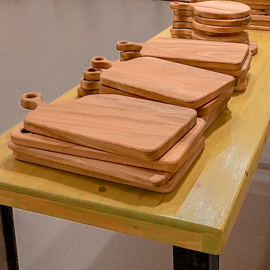
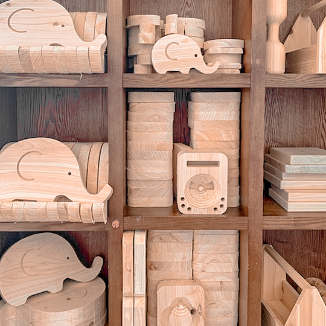
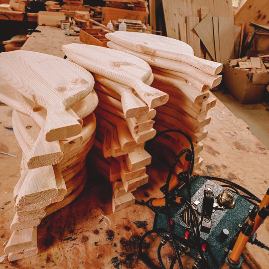
편리한 플라스틱이 집안을 점령하고 있는 요즘, 대량으로 생산되는 식상한 가구 대신 자연을 닮은 편백 향이 물씬 풍기는 나만의 소품을 만들어보세요. 남녀노소 누구나 내 손으로 직접 설계하고 만들며 오감으로 즐길 수 있는 체험 활동입니다.
- 담당강사: 김광수 관장
- 수업정원: 1~30명
- 소요기간: 1~3시간
- 체험내용: 편백도마, 트레이등 100여가지 소품 만들기
- 수강일정: 상담필수
- 수강금액: 상담필수
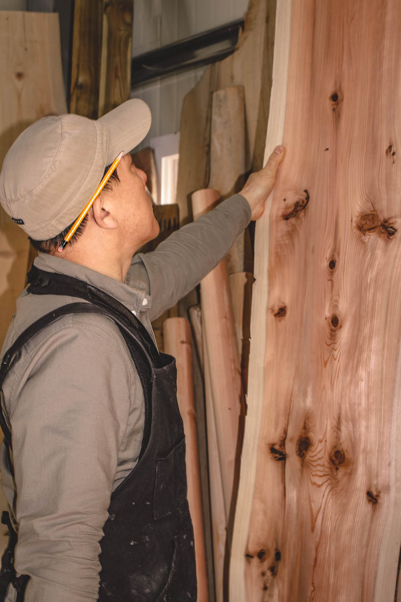
누구나 자신의 체형에 맞는 가구 및 목공예품을 내 손으로 직접 디자인하고 완성하여 실생활에서 사용할 수 있습니다. MDF 목재가 아닌 홍송, 편백나무 등 자연친화적인 목재를 사용하며, 오감으로 즐길 수 있는 취미에서 고급까지 과정입니다.
- 담당강사: 김광수 관장
- 수업정원: 1~5명
- 소요기간: 3개월(이론/실습 2시간)
- 교육과정: 상담필수(초급/중급/고급)
- 수강일정: 상담필수
- 수강금액: 상담필수
-
이런분들께 추천 드려요!
- 스트레스 해소 및 자연을 벗삼아 힐링하고 싶은 분
- 창업을 희망하시는 분
- 정년퇴임 후 노년의 생활을 재밌고 의미 있게 보내며 수익창출이 필요하신 분
Basic
내 손으로 만드는
DIY 목공예

목공예 작품
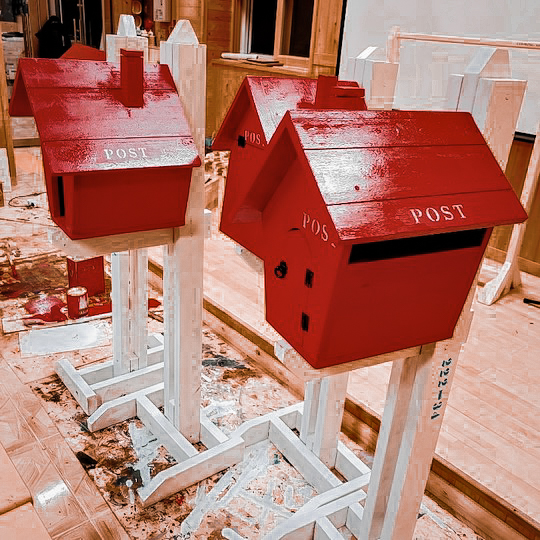
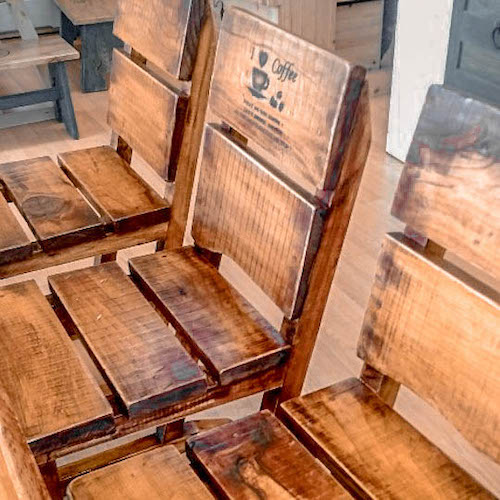
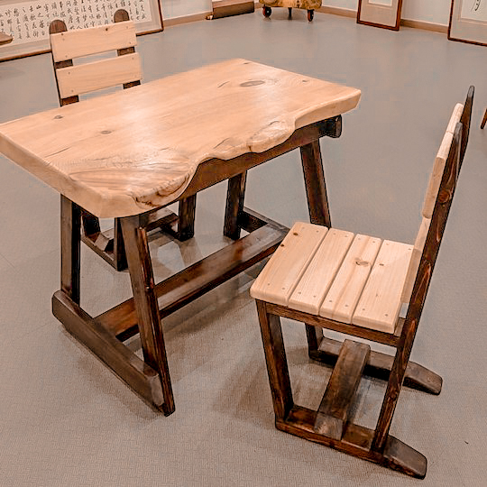
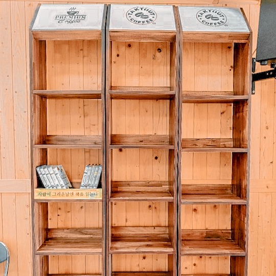
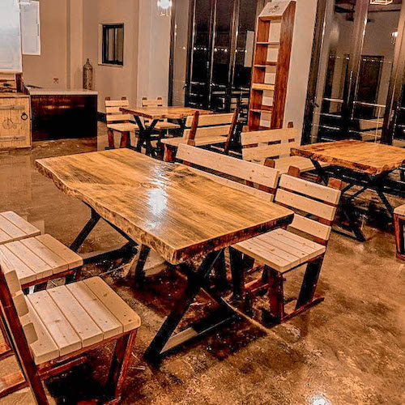
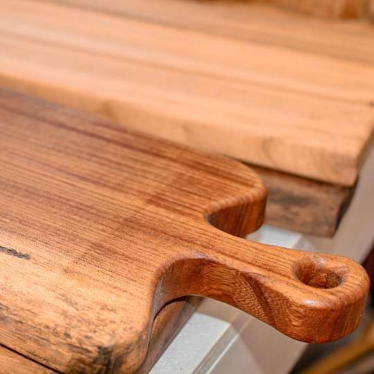

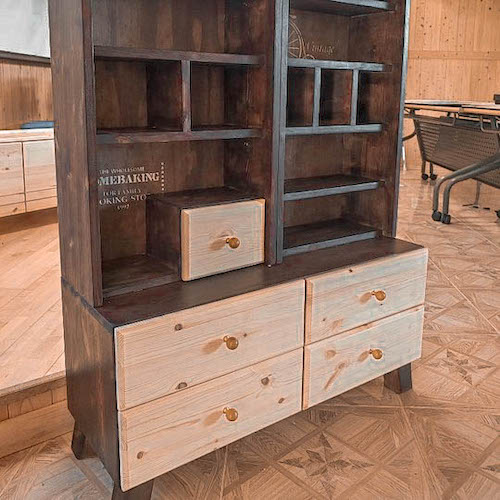

나무의 효능
DIY재료 - 홍송 편백 삼나무
향균 및 방충
나무는 음이온을 방출하고, 산소 공급 및 실내 수분량을 조절합니다.
아토피, 비염 완화
나무의 향균 및 방충효과는 알러지 아토피성 피부 완화에 효과적입니다.
스트레소 해소
감각 계통 안정, 심신 정화, 혈액 순환등을 느낄 수 있습니다.


Woodcraft Review

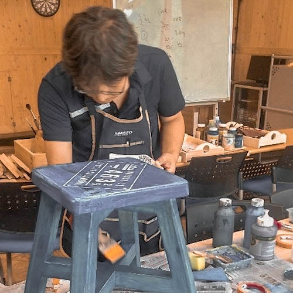
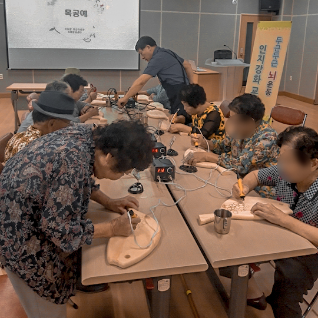
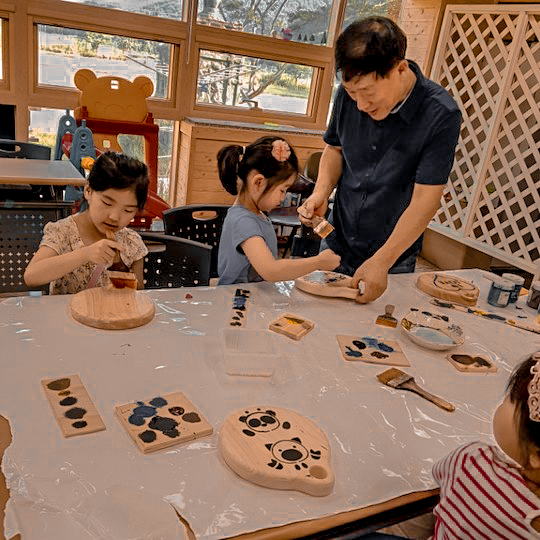
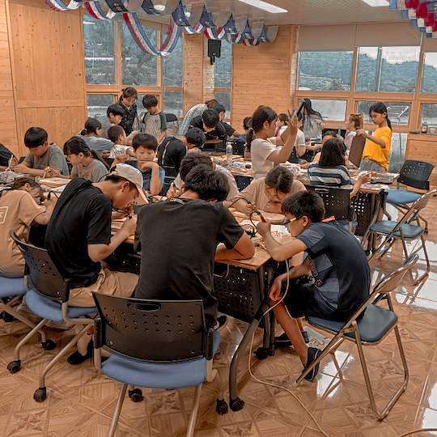
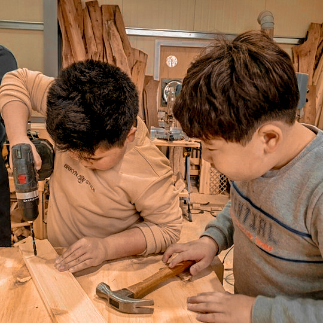
@곡성 목공예커피체험관